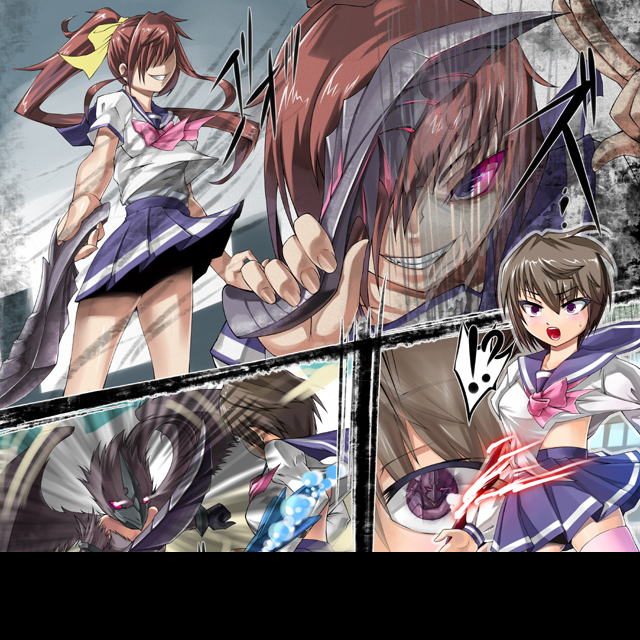

商店街。本来なら人でごった返すはずのそこには誰もいない。みんな逃げた。
そこにいたのは一人の少女。学校で着るような体操服姿。
今のご時世にブルマである。
特異なのがその腕につけたもの。右腕には夕日のような赤い、左腕には海のような青のガントレットをつけていた。
彼女。セーラはショートカットというにはやや長い髪をなびかせて軽やかに躍るように異形へと攻撃を叩き込む。
両手両足。そして頭部が触手となっている。ヒトデのような姿の異形。
便宜上シースターアマッドネスと呼ばれるその出現が商店街から人を追い出した。
しかしそれを見つけたセーラが駆けつけて倒しに掛かっている。
「さあ。とどめよ」
左腕を水平に凪ぐ。
まるで凍てついたようにシースターの動きが止まる。
相手の動きを止めて、続く攻撃を確実に当てる技。アクアフリーズである。
「あひぃぃぃぃっ」
恐怖の悲鳴を上げるヒトデの怪物。だがセーラは攻撃をしない。
「セーラさまっ」
傍らでアシストしていた黒猫の姿の従者。キャロルが警告を発する。むろんセーラにもわかっている。
「くるっ」
彼女は新手のアマッドネスの襲来を察知した。
その刹那。羽根を用いた「手裏剣」が背中から雨あられと降り注ぐ。
「きゃっ」
可愛らしい悲鳴を上げて彼女は反射的に避けた。
そして振り返り天空をにらむ。
ハヤブサの能力を持つファルコンアマッドネスがホバリングしていた。
「セーラ。今度こそお前の命をもらうぞ」
「また出たわね……」
聖なる戦士にあるまじき感情。憎悪を隠そうともしない拳の戦乙女。
ハヤブサの異形も殺意をむき出しにしている。
それが互いに幼なじみの変貌した姿と知らずに
戦乙女セーラ
ＥＰＩＳＯＤＥ２２「愛憎」
にらみ合いを続けるうちにシースターアマッドネスの硬直が解けた。
（た…助かった）
前世でセーラに倒されて苦手意識を持つシースターはファルコンの加勢など考えず逃げに掛かる。
ファルコンも咎めない。そもそも眼中にない。邪魔でしかない。
だから遠慮無しに逃げ出した。
そしてそれに気づかないセーラ。既に天空の相手にのみ目が向いている。
やがて第２ラウンドのゴングとばかしに左腕のガントレットを叩く。
瞬時にしてその姿がスクール水着の少女へと変貌する。
髪は腰に達するほど長く。これは魚のえらと同様に水中の酸素を取り込める。だからセーラはこの『マーメイドフォーム』でいる限り水中では活動限界がない。
水中という高負荷のエリアで活動するためこれまですべてのフォームでもっとも筋力があり怪力を誇る。
その代償として鈍重ではあるが、それは鉄壁の防御力でカバーできる。
「ふん。守りに入ったか」
蔑むように言うファルコン。
自分の世界である空中に来ないことにいらだっている。
「わざわざあんたになんかに付き合う必要はないわ」
言うと携帯している伸縮警棒を取り出す。それに念をこめると「槍」へと変化した。
セーラはこの姿のときは「長くて振り回せる棒」を槍へと変えることができる。
ちなみに水中では銛になる。同様に現在はサンダルである履物も、水中では脚ひれへと変わる。
「さぁ。きなさい」
ぐるんと槍を振り回し、右手の腋に柄を納める。
「虫けらのように地上を這い蹲りたいと言うなら、望みどおり上から殺してくれるわ」
右腕を一閃すると、いつの間にか手にしていた羽手裏剣を降り注がせる。
「それも対策済みよ」
マーメイドランスと名づけられた槍をバトンのように高速回転させてすべて叩き落した。
次のファルコンの攻撃は意外にも羽手裏剣の追撃ではなく、本人が高速で突撃して来た。
ファルコンの側からしたら予定の行動だが、わざわざ槍の「射程距離」に飛び込むのはセーラとしては予想外だったらしい。
慌ててしまい対処が遅れる。ただでさえ陸上では鈍重な人魚姫。爪がのどもとに迫る。
「危ない」
とっさにキャロルが飛ぶ。ペガサスの姿でもバイクの形態でもなく、文字通り「盾」となる。
直径１メートルほどの真円の盾はファルコンアマッドネスの攻撃から主を守る。
「キャロル。その姿？」
「私は人造生命体です。複雑な部品の組み合わせであるバイクになることを思えば、鉄の塊である盾になることなど造作もありません」
ただし当然ながらそれなりの強度のために重量も増える。
扱えるのはセーラの場合このマーメイドフォームだけだが、基本的に防御力が高いフォームなので今までならなかったのである。
「もう少しセーラ様の『乙女心』が本物になれば、切り札とも言うべき形態にもなれるのですが……」
このつぶやきはセーラには聞こえていない。
既に空中でホバリングしたファルコンとにらみ合いになっているからだ。
遠くからサイレンが聞こえる。
元々シースターアマッドネス出現がきっかけで起きた戦闘。
通報されていたのでここでパトカーが到着した。
「ちっ。勝負はお預けだ」
邪魔者の到来に舌打ちするとハヤブサのアマッドネスはいずこかへと飛んでいってしまった。
「ふん」
憎らしそうにそれを見送っていたセーラ。深追いはしない。敵の得意エリアである空での戦いを避けた。
闘いは終わっている。いつまでもこの場にいると警察相手にもややこしいことになる。
とりあえず一気に基本形態。エンジェルフォームへと戻ると、その場からさりつつその服を普通の女の子らしく変化させる。
戦いの跡を鑑識が調査している。
物陰で薫子とセーラが話しをしていた。
「またアイツ？」
「はい。あのハヤブサのアマッドネスでした」
確認してはいるがむしろ「確信」していたと思われる薫子。
何しろ散弾銃を手にしている。
普通の鳥相手ならそれでいいが、人間サイズとなるとどれほどのダメージか怪しい。
それでもライフルで拘束飛行する相手を狙うのは至難の技。
とりあえず動きを止めることを考えこの武器だったが空振りに終わった。
「一つだけ救いなのはアイツはセーラちゃんを殺すことだけに執着しているからね。他の人間は無視しているのは助かるわ」
「ええ」
どうにも歯切れの悪いセーラの返答。
「元気ないわね？ 怪我してんの？」
「いえ……ただあいつとの戦いはいつにもましてすっきりしなくて」
「まぁ中には罪のない人が取り付かれて、あなたがそれを倒したことでその人は残りの人生を女としてやり直す羽目になる。それでそんなに浮かれていないというのは理解したわ」
セーラとしてはアマッドネスを放置できない。すればますます強制的に女へと変えられる男が増えるだろう。
ましてや「奴隷」だと自我が消える。そうなっては死んだも同然。
大元である幹部とも言うべきアマッドネスを倒すしか解放の手段はない。
しかし結果として取り付かれたものの残りの人生を大きく変えることになる。
「それは割り切るしかないわね。女になるのは避けられなくても死ぬわけじゃないしね」
「わかってはいるんですけど……」
女性化しているせいでもあるまいがいつも以上に歯切れの悪い。
「セーラちゃん。もしあたしがアマッドネスに取り付かれたらどうする？」
イジワルな質問だ。
「そんなっ。お姉さまに拳を向けるなんて」
「でも『あたし』を倒さないと被害が増える一方よ」
「う……」
それも承知しているはずだが、自分がやはりいつか完全に女に。
ヘタしたら存在自体が消えることを意識してからというもの、割り切ったつもりで心のどこかで躊躇があった。
「それに『あたし』も自分が加害者になるのは嫌よ。だからあなたに止めて欲しい」
倒すことは救済だ。そう言い聞かせている。
「まぁあたしの場合は元から女だから倒されても影響は少ないでしょうけど」
重くなった雰囲気を察して軽い調子で薫子が言う。セーラは無言である。
「……やっぱり、自分の手を汚すのは嫌？」
民間人に協力させている負い目がその言葉を言わせた。セーラは否定も肯定もしない。
「そうじゃないんです。ただ」
言葉を切る。言いよどんでいるが懺悔のように心情を吐露した。
「あいつと戦っているとどんどんと憎悪で満ちてくるんです。たぶんあいつの憎悪に影響されてだと思うんですけど」
それでセーラは暗かった。
「憎悪で力を振るう。それってあいつらの暴力と何にも変わりませんよね……」
薫子には何もいえなかった。
野川家。自室のヘッドに制服のままうつ伏せになっている友紀。悪夢により苦悶の表情を浮かべている。
（ここは？）
明らかに教会。制服姿のままの友紀。周りには顔もわからない正装の男女。
やがて荘厳な音楽が鳴り響く。結婚式だとやっと理解した。
扉が開くと真っ白のタキシードを着た清良が、純白のウエディングドレスのセーラを抱きかかえて入場してきた。
二人は幸せそうに微笑み合い前方へと進む。
「清良。ちょっとまってよ。清良」
その呼びかけを完全無視。清良の視線はセーラに釘付けされている。
「もう。あたしの声が聞こえないの？」
「聞こえないわよ」
鈴を転がすような声。それでいて憎しみがこみ上げてくるセーラの口調。
「彼はもう私のものよ。誰にも渡さないわ」
勝利宣言に女のプライドが傷つけられた。
「あんたなんかに渡すもんですか」
友紀ははっきりと憎悪を感じた。
ひどい頭痛で目が醒めた。
「……まただわ。何でこんなに疲れてるんだろ？ 今日は部活も体育の授業もなかったのに」
原因は言うまでもない。ファルコンアマッドネスとしてセーラと演じた死闘である。
他のアマッドネスと違い記憶が混合されていない。
セーラが清良と知っては繋ぎとしている「嫉妬心」がなくなる。
だから怪人としての姿の時の記憶はない。
しかし肉体の疲労はそうも行かない。どうしても残るのだ。
「あたし夢遊病とか言うことはないわよね？」
思わずひとり言を言ってしまう。自分で自分を疑っている。
いくら疑っても戦闘の時の記憶はないのだ。
ただ嫉妬心を憎悪と変えるため一部だけ戦闘のときに心が繋がっている。
だからほんの僅かにイメージとしてセーラが憎い女として記憶されている。
それが見せたこの悪夢である。
橋の下。浮浪者のねぐらとしてはよくある場所にシースターアマッドネスに変化する鳴海星一がいた。
今は「彼」と呼ぶ存在は、缶をコンロ代わりにして調理をしていた。
枯れ木でもゴミでも燃料はある。その燃え盛る炎を見つめて考えていた。
（いまなら……セーラを殺せるんじゃないか？ ルコに協力してもらえりゃ倒せるんじゃないか？ そうすりゃいつまでも逃げ回らないですむんじゃないのか？）
ささやかなプライドが思考をそちらに回した。
そして決意を固めた。
打って出る決意を固めたシースターはセーラを探すことにした。
これまで遭遇した場所を中心に探すが見つからない。記憶を手繰る。
（そういやアイツ。変身前も学生服だったか？ どこかに学校があったよな）
ふらふらと福真高校へと足を向ける。
清良も友紀も疲労感を覚えつつもこの日は普通に学校生活をしていた。
アマッドネスが出現してそれを迎撃するのが清良。そしてセーラ。
それを付けねらうのがファルコンアマッドネスなのである。
最初に出現がない以上は平凡な、そして貴重な平野な日を満喫できる。その放課後。
「友紀。今日は部活か？」
「うん。先に帰ってて。清良」
普通の男の子と女の子。むしろ仲が良すぎるくらいの会話である。
とてもではないが殺し合いをしている二人のそれではない。
アマッドネスさえ現れなければだが。
その静寂を破るものがいた。やっとたどり着いた鳴海が正門から堂々と乱入して来た。
もちろんファルコンの援護を当てにしてである。
（ここの生徒じゃなくても騒ぎを起こせば向こうからくる）
そう考えていた。
生徒たちはあからさまに不審者。そして浮浪者に嫌な表情をする。
軽くにらみつける鳴海だがにらむのではなく清良かどうか確認していた。
「ちっ。やっぱこっちじゃなきゃダメか」
鳴海はシースターアマッドネスに変化した。
怪人出現にパニックに陥る福真高校。
当然この出現は清良が感知していた。
「セーラさまっ」
待機していたキャロルが清良の元に駆けつけた。
「乗り込んでくるたぁな。久々の学校バトルか」
頻出地帯である。生徒がいる時の闘いも想定のうち。
例えば授業中なら基本的に教室。体育の授業で外にいるものもいるが、それとて体育館。グラウンド。場合によっては学校周辺だがそれでも人のいない場所がある。
そしてこの場合、既に放課後。空いている教室などいくらでもある。
手ごろなところに飛び込み、素早く儀式を開始する。
右腕を天に。左腕を地に向ける。天に紅いガントレット。地に蒼いガントレットが出現する。それを水平に運びぐっと腋にひきつける。
「変身！」
叫ぶと同時に両腕を突き出してガントレットを重ね合わせると激しい閃光。
それが収まるとセーラー服を模した戦闘服に身を包んだ少女戦士がいた。
セーラは感覚の命ずるままに窓に駆け寄る。
新体操部の活動で着替えに向かっていたはずの友紀。だが怪人出現で避難となった。
しかしセーラの登場で意識がブラックアウト。ルコのそれと切り替わる。
（ほう）
感覚からしてセーラは近い。この学校だろう。そして同胞の感覚もある。つまりここが戦場だ。
（そうだな。せっかくこの姿を得たのだ。これも一興）
彼女は人のいなくなったところを制服姿のままゆっくりと歩いていく。
校庭にまで出たシースターは調子に乗っていた。
「セーラ。どこだ？ 出てこい」
「ここだぁっ」
甲高い声が上から響く。屋上からだ。
別に演出したわけではない。教室にいるところを見られたくなかった。
万が一相手が自分の素性をしらなかった場合、わざわざ教えたくなかったゆえだ。
「むっ。そんなところにいないで降りてこい」
怒鳴る声がよく通る。もっとも通じなくても闘いに降りるわけであるが。
「いわれなくても」
セーラはレオタード姿に転ずると校庭へと舞い降り、基本のエンジェルフォームに戻るとシースターと対峙する。
圧倒していた相手。邪魔さえ入らなければしとめられる余裕。
一瞬でそれが吹っ飛ぶ。シースター越しに見える少女の姿。友紀がいる。
「危ないから逃げろ！」
既に変身しているから正体を知られる危険性はないが、単純に戦闘による巻き添えを怖れた。
変身直後でまだ男としての意識が残ってるから男言葉で叫ぶ。
それに対して友紀はとても彼女とは思えない邪悪な笑みを「にぃっ」と言う感じで浮かべる。
斜め下に振り下ろした右手に羽手裏剣が出たのがセーラにもよく見えた。
「ま……まさか！？」
そんなバカな？ 考えたくない。このパターンがあるということを考えるのを拒絶していた。
しかし現実は残酷。
友紀は羽手裏剣をくるくると三回回して顔面に運ぶ。
本来ならもう一瞬で変われるが、ここは心理戦であえてゆっくりと変化する。
優しげな目が吊りあがり猛禽類のそれに。
唇が突き出されて硬質化して嘴に。
手の指がすべて鳥類のカギ爪に。
肌が無数の羽毛に覆われ、背中を突き破って巨大な羽根が出現。着衣はすべて吹き飛んでいた。

このイラストはＯＭＣによって作成されました。
クリエイターのていくあうとさんに感謝！
すべてを見たセーラは愕然としていた。
効果を見てほくそえむファルコンがゆっくりと歩み寄る。
やっとの思いでセーラが叫ぶ。
「お……お前が、ファルコンアマッドネスだったと言うのか？ ウソだといってくれ。友紀ぃーっっっっっ」